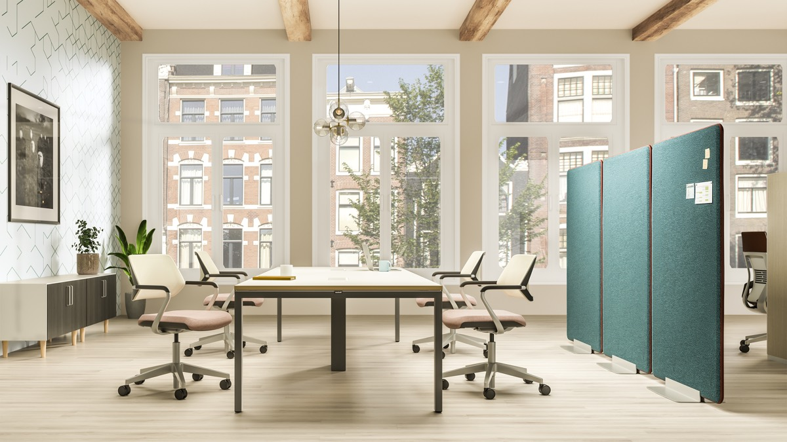

32 yazı
Rehber ve blog
Zemin ve ofis mobilyası seçerken işinize yarayacak rehberler; projelerimizden ve markalarımızdan haberler.


Karo halı mı, LVT mi? Ofisiniz için doğru zemini seçmek
İkisi de modüler, ikisi de hızlı uygulanır ve ikisi de Interface'in Türkiye temsilcisi olarak sunduğumuz ürünler. Fark, alanın nasıl…

Yükseltilmiş döşeme seçerken nelere bakılır?
Yükseltilmiş döşeme, kabloları, boruları ve havalandırmayı zeminin altına taşıyarak ofisin yerleşimini yıllarca esnek tutar. Doğru sistemi…
32 yazı
Karo halı mı, LVT mi? Ofisiniz için doğru zemini seçmek
Yükseltilmiş döşeme seçerken nelere bakılır?

Kentin Geleceğini Birlikte Tasarlamak: AURA x İPA 2026 Yaz Akademisi

Nöromimari ile Çalışma Alanlarını Tasarlamak

Interface’in Yeni Kauçuk Zemin Çözümü: noravant

Hibrit Çalışma Kültürü Oluşturmak

Ezcaray Seating ile Sabit Sistem Oturma Çözümleri

Ofislerde Akustik Konforun Çalışan Verimliliğine Etkisi

Çalışma Alanlarında Sanat

Klassis ve SMD Federasyonu’ndan Bölgesel Mimar Buluşmaları

Sessiz, Dayanıklı, Doğal: nora® Kauçuk Zemin Döşemeleri

İlerlemenin Amacı: İnsan ve Gezegen için Sorumluluk

Mutluluğun Mekanı: Steelcase ile İş Yerinde Yeni Dönem

Doğa, Teknoloji ve Esneklik: Yeni Nesil Öğrenme Deneyimi

Ödüllü Tasarımı ile Steelcase Gesture

Sessizliğin Yeni Standardı: Interface LVT’de 19 dB Akustik Konfor

Hibrit Çalışma Modelinde Yön Değişiyor: Şirketler Ofise Dönüşü Teşvik Ediyor

Eğitim Yapılarında Kullanıcı Odaklı Tasarım

Yükseltilmiş Döşeme Sistemlerinde Yeni Dönem: Lindner NORTEC aurum ile Sürdürülebilirlik ve Performans Bir Arada

Toplum Odaklı Tasarım

Karbon Nötr Bir Oturma Deneyimi: Steelcase Çalışma Sandalyeleri

Teraslarınız için Akıllı ve Dayanıklı Çözümler: Buzon PB Serisi Dış Mekan Ayarlanabilir Ayak Sistemleri

Çalışma Alanlarında Renklerin Psikolojik Etkileri: Verimliliği Artıran Tasarımlar

Çalışma Alanlarında Değişim ve Dönüşüm

Dünya Lideri Steelcase media:scape’i tanıttı.

Figueras / Zorlu Center

Interface Urban Retreat ile ‘Doğadan Esintiler’

Klassis WAF Party

Lindner

Teknolojinin Rahat Kullanımına Cevap Veren İlk Koltuk: Steelcase Gesture

Esnek Tasarım İçin İpuçları

Interface Yoluna Klassis ile Devam Ediyor
Eşleşen yazı bulunamadı.

Teklif ve iletişim
Projeniz için teklif alın
Ürün grubu, yaklaşık miktar ve proje konumu yeterli. Showroom ziyareti için de bize ulaşın.
 Tümünü gör
Tümünü gör Çalışma Sandalyeleri
Çalışma Sandalyeleri Çalışma Masaları
Çalışma Masaları Toplantı Masaları
Toplantı Masaları Toplantı Sandalyeleri
Toplantı Sandalyeleri Oturma Grupları
Oturma Grupları Tekli Oturma
Tekli Oturma Bank ve Puflar
Bank ve Puflar Bar Sandalyeleri
Bar Sandalyeleri Konferans Sandalyeleri
Konferans Sandalyeleri Akustik ve Gizlilik
Akustik ve Gizlilik Depolama Üniteleri
Depolama Üniteleri Arşiv ve Depo Sistemleri
Arşiv ve Depo Sistemleri Tümünü gör
Tümünü gör Karo Halı
Karo Halı LVT
LVT Kauçuk Zemin
Kauçuk Zemin Dış Mekan Ayak Sistemleri
Dış Mekan Ayak Sistemleri Doğal Ahşap Deck
Doğal Ahşap Deck